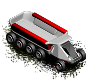

Transporter
The Transporter is a simple unit used to carry goods between Martian
colonies.
This unit does not have any armor or armament and can not fight, it will be
destroyed and its cargo lost even if an enemy unit with minimum arms
attacks it, thus the transporter must not be left undefended.
This unit can carry 1000 tons of following goods:
- Food
- Stone
- Iron
- Lumber
- Silica

| Movement points |
2 |
| Attack |
0 |
| Defence |
0 |
| Production cost |
2000 |
| Upkeep cost |
60 |
Can move on:
- Plains
- Desert
- Wasteland
- Tundra